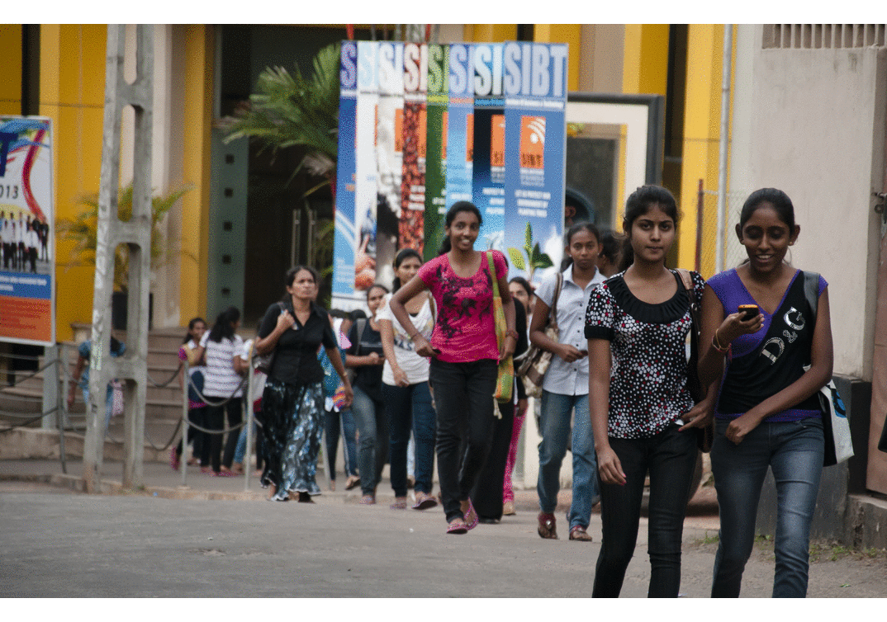
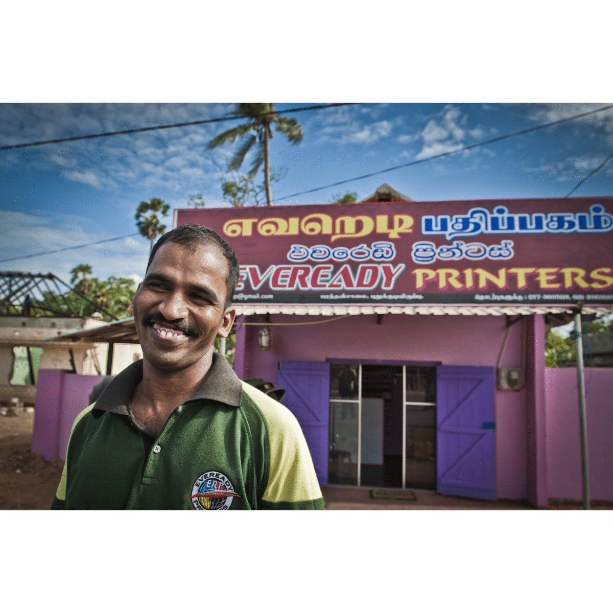

ICTs and Youth Aspirations Digital Dreams
ICTs and Economic Empowerment Moving up with mobile

ICTs in post war Sri Lanka
Help People In Sri Lanka
ICTs and Youth Aspirations Digital Dreams
From factory bench to computer chair, the job aspirations of Sri Lanka's youth are changing rapidly. In the 1980s, following the liberalisation of the economy and limited industrialisation that came with it (particularly in the hundreds of ready-made garment factories), the country's youth saw manufacturing sector work as the path to prosperity. Thirty years on, gaining upward social mobility necessarily means, in the minds of many young people, getting a service sector job - an officer in a government department, a sales assistant in a retail outlet, and of course, a computer whiz in an IT business. With economic growth and poverty reduction over the last decade, young people today, especially in urban areas across the country, arguably enjoy a better standard of living than before. This influences their 'likes' and 'dislikes' when it comes to their choice of occupation. While it is the generation before them that helped them get there, they are reaping its benefits. But, we often find that their aspirations and preferences have gone ahead of the reality on offer. The Sri Lankan economy continues to be unsophisticated - driven by crop processing and light manufacturing - and the IT and IT-enabled services (ITeS) sector is underdeveloped and concentrated in Colombo. So, the question is, will the changing aspirations of Sri Lanka's young people towards "IT jobs" be matched by the changing structure of the Sri Lankan economy and will the government and the private sector be able to respond to these changes? This feature attempts to explore this question
ICTs and Economic Empowerment Moving up with mobile
Constantly pulling out our phone to check-in on Foursquare or flipping open our tab to send that urgent email, we sometimes forget that it is not just the urbanised 'city folk' that are finding mobile technologies transformative in their lives. This feature takes a look at how different types of mobile devices - from basic phones to Android tabs - are being used by different groups of people across Sri Lanka for new and meaningful purposes that would have been unheard of thirty years ago. Farmers in the middle of a muddy field checking their phones for prices of potatoes? Six year old kids in a remote village flipping through an app on a tab and learning English? A small retailer whose business has tripled because he is the 'go to guy' for mobile phone services in the area? A boy who makes sure a bus to the East is never empty because of tickets sold over the phone? This feature, with pictures from ten localities in three districts, demonstrates the power of mobile technology and the potential it holds for the future of economic empowerment in Sri Lanka.
ICTs in post war Sri Lanka
ICT in post war Sri Lanka explores the use of information and communication technologies by people living in the North and East. Over the last few years infrastructure and connectivity in the North and East have rapidly developed. While there is still no electricity in some parts of the North and East, billboards of all network service providers dot the landscape, internet cafes and mobile/computer repair shops are common in towns in both Provinces. This feature highlights unique use of ICTs in these areas by ordinary people rebuilding their lives after the 30 year war